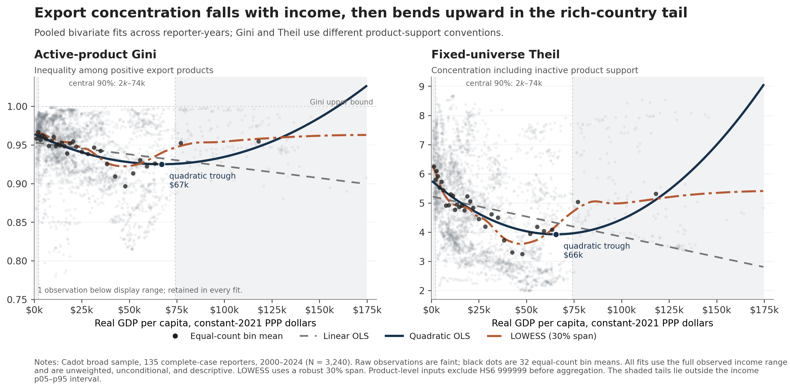
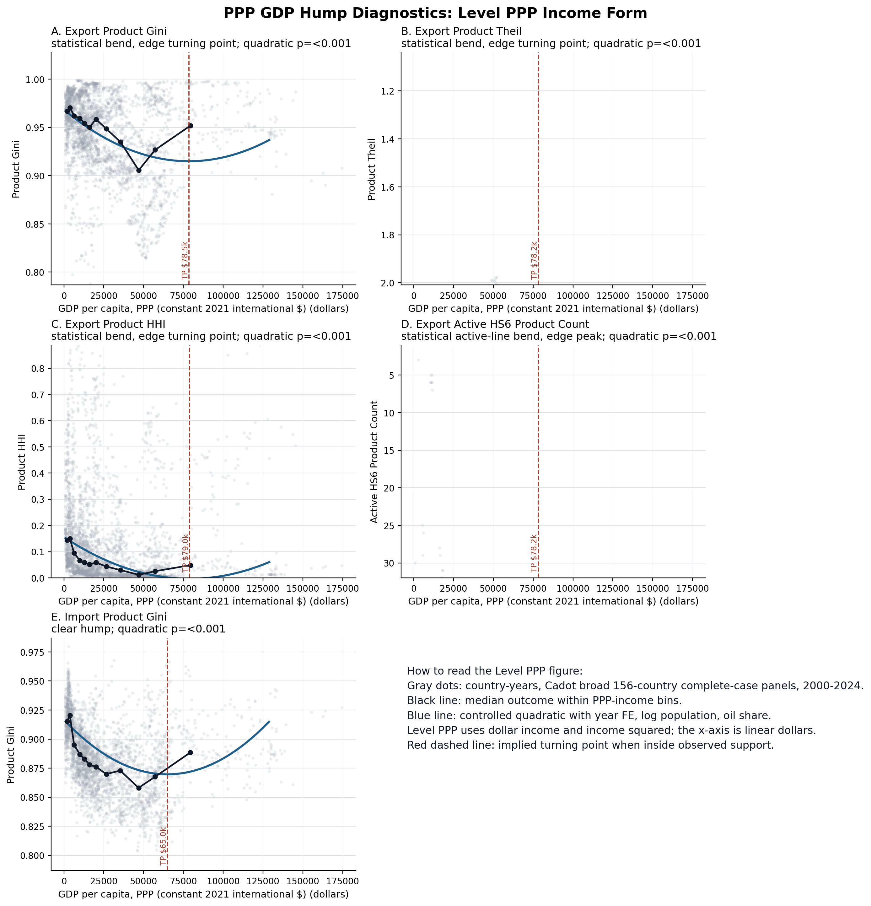
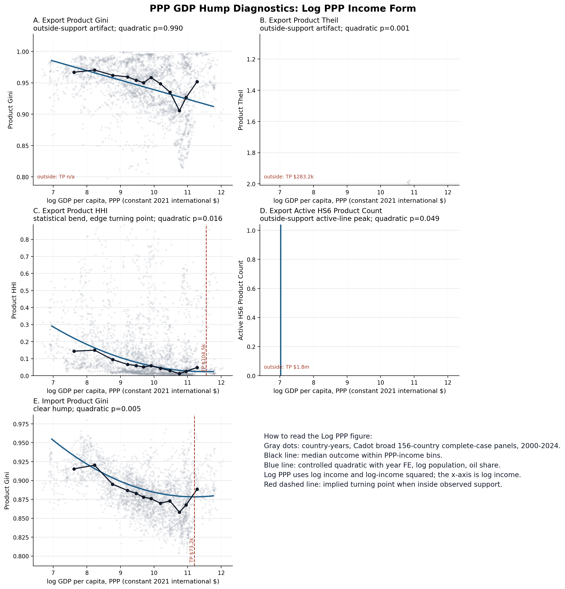
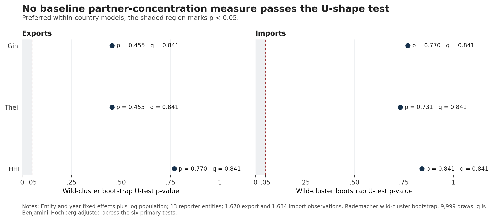
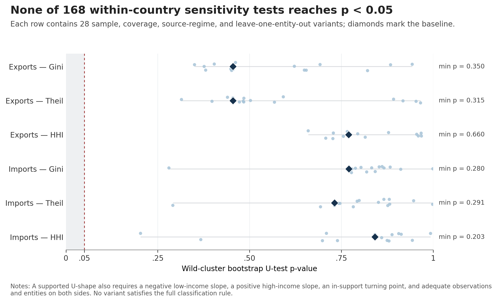
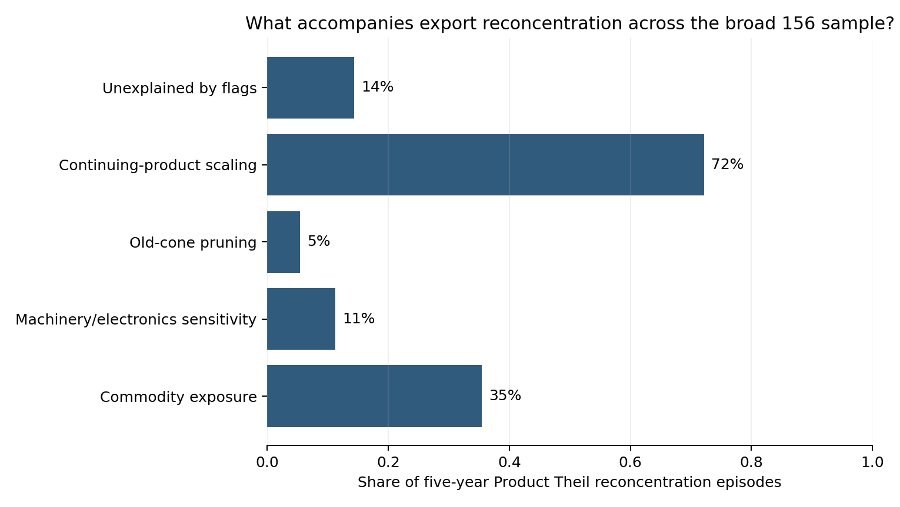
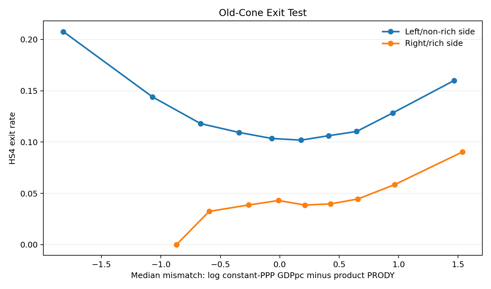

Level-PPP product curvature is strongest between countries.
Replication, reinterpretation, and boundary tests
Cadot Diversification Hump: Combined Results
This page combines the modern 156-reporter reconstruction, pooled-versus-within tests, production-core exclusions, mechanism exercises, and the 1827-2014 historical partner-concentration boundary test.
Interpretation and Results
The evidence refines Cadot rather than delivering a binary replication verdict.
Country fixed effects remove the broad export Gini and Theil humps.
Active-product Gini does not; log-income forms do not.
72.2% of broad-sample reconcentration episodes carry this flag.
No 1827-2014 within-country partner U-shape survives the sensitivity grid.
What survives
Modern product concentration declines with development and bends upward in the rich-country cross section. Between-country differences account for 73.2% of Export Product Gini variation, 94.1% of Theil variation, and 81.1% of HHI variation.
After removing microstates, major oil exporters, and finance, tax-conduit, offshore, and re-export hubs, the level-PPP between-country hump remains for fixed-universe Theil, HHI, and active-product counts. The Theil/count turning point is about $46,000, with 12 of 83 countries, or 14.5%, above it—close to Cadot's 21 of 141 countries, or 14.9%.
What does not survive
The modern export Gini and Theil humps do not survive country fixed effects in the broad sample. The production-core active-product Gini has no supported cross-country U-shape, and none of the four production-core outcomes passes the endpoint test under log GDP per capita.
The historical exercise is across trading partners, not products. It rules out a generic law that development eventually reconcentrates trade, but it does not constitute a historical product-level replication of Cadot.
Current econometric interpretation: Cadot captures a real equilibrium relationship across country types in product space. Our evidence does not support a universal within-country development sequence or a predominantly extensive-margin exit mechanism. Persistent differences in scale, comparative advantage, sectoral specialization, global-product demand, institutions, and trade-hub status explain much of the pooled shape.
{kind=link}

Modern 156-Reporter Product Results
Unit: reporter-year. Income is real GDP per capita in constant-2021 PPP dollars. Models include log population and oil-export share; pooled and country-FE models include year effects and reporter-clustered standard errors. Product calculations exclude HS6 999999 before aggregation.
| Outcome | Estimator | Quadratic coef. | Raw p-value | Turning point | Inside p05-p95 | Result | N | Countries |
|---|---|---|---|---|---|---|---|---|
| Export Product Gini | pooled + year FE | 0.001 | 0.000 | $78,520 | no | statistical bend, edge turning point | 3,240 | 135 |
| Export Product Gini | between countries | 0.001 | 0.000 | $72,605 | yes | clear hump | 135 | 135 |
| Export Product Gini | country + year FE | 0.000 | 0.933 | $471,105 | no | outside-support artifact | 3,240 | 135 |
| Export Product Theil | pooled + year FE | 0.041 | 0.000 | $78,227 | no | statistical bend, edge turning point | 3,240 | 135 |
| Export Product Theil | between countries | 0.049 | 0.000 | $73,212 | yes | clear hump | 135 | 135 |
| Export Product Theil | country + year FE | -0.002 | 0.608 | $170,072 | no | no concentration U-shape | 3,240 | 135 |
| Export Product HHI | pooled + year FE | 0.003 | 0.000 | $78,981 | no | statistical bend, edge turning point | 3,240 | 135 |
| Export Product HHI | between countries | 0.003 | 0.001 | $74,674 | no | statistical bend, edge turning point | 135 | 135 |
| Export Product HHI | country + year FE | -0.002 | 0.028 | $123,029 | no | no concentration U-shape | 3,240 | 135 |
| Export Active HS6 Product Count | pooled + year FE | -51.199 | 0.000 | $78,198 | no | statistical active-line bend, edge peak | 3,240 | 135 |
| Export Active HS6 Product Count | between countries | -59.776 | 0.000 | $73,280 | yes | clear active-line hump | 135 | 135 |
| Export Active HS6 Product Count | country + year FE | -12.279 | 0.002 | $95,322 | no | statistical active-line bend, edge peak | 3,240 | 135 |
{kind=link}

{kind=link}

Where the variation comes from
| Export outcome | Between-country share | Within-country share | N | Countries |
|---|---|---|---|---|
| Export Product Gini | 73.2% | 26.8% | 3,240 | 135 |
| Export Product Theil | 94.1% | 5.9% | 3,240 | 135 |
| Export Product HHI | 81.1% | 18.9% | 3,240 | 135 |
Production-Core Exclusion Exercise
The severe screen removes countries with mean population below one million, mean oil/fuel export shares of at least 30%, and prominent finance, tax-conduit, offshore, or re-export hubs. It leaves 83 countries. This remains gross customs trade—not domestic value-added production.
| Outcome | Estimator | Endpoint test | IUT p-value | Turning point/peak | Inside p05-p95 | Countries above | Countries |
|---|---|---|---|---|---|---|---|
| Export Product Gini | between countries | not supported | 0.955 | $102,903 | no | 0 | 83 |
| Export Product Gini | country + year FE | not supported | 0.081 | $39,059 | yes | 26 | 83 |
| Export Product Theil | between countries | supported U-shape | 0.032 | $46,026 | yes | 12 | 83 |
| Export Product Theil | country + year FE | not supported | 0.470 | $55,697 | yes | 9 | 83 |
| Export Product HHI | between countries | supported U-shape | 0.005 | $39,934 | yes | 16 | 83 |
| Export Product HHI | country + year FE | not supported | 0.750 | $320,037 | no | 0 | 83 |
| Export active-product count | between countries | supported inverted U | 0.005 | $46,020 | yes | 12 | 83 |
| Export active-product count | country + year FE | not supported | 0.624 | $61,226 | no | 6 | 83 |
Read: Removing hubs does not erase the level-PPP cross-country pattern. It shifts the Theil and active-count turning point to about $46,000 and the HHI turning point to about $40,000. But active-product Gini does not turn, log-income versions fail, and no country-FE specification passes the endpoint test at 5%.
Historical Exercise: Partner Concentration, 1827-2014
CEPII TRADHIST bilateral flows are combined with Maddison GDP per capita and population for 13 source-defined reporter entities. Measures are Gini, Theil, and HHI across observed positive partners. Missing historical dyads are not converted to zero; the preferred baseline requires at least 20 active partners.
| Flow | Partner measure | Endpoint slopes | Stationary point | Wild-bootstrap p | BH q-value | Classification | N | Entities |
|---|---|---|---|---|---|---|---|---|
| Exports | Gini | U-shaped signs | $30,142 | 0.455 | 0.841 | insufficient_support | 1,670 | 13 |
| Exports | Theil | U-shaped signs | $11,663 | 0.455 | 0.841 | suggestive_only | 1,670 | 13 |
| Exports | HHI | negative to negative | $47,181 | 0.770 | 0.841 | outside_support | 1,670 | 13 |
| Imports | Gini | negative to negative | -$287,798 | 0.770 | 0.841 | outside_support | 1,634 | 13 |
| Imports | Theil | inverted-U signs | $20,432 | 0.731 | 0.841 | no_u_shape | 1,634 | 13 |
| Imports | HHI | negative to negative | -$553,051 | 0.841 | 0.841 | outside_support | 1,634 | 13 |
{kind=link}

{kind=link}

Scope: This is a long-run boundary test of concentration across partners. It is not a product-level historical replication. USSR and the Russian Federation remain separate entities, and the sensitivity grid includes war exclusions, pre/post-1948 source regimes, partner-count thresholds, common-partner blocks, rank truncation, synthetic censoring, and leave-one-entity-out checks.
Latest Mechanism Exercises: Broad 156 Sample
These five-year episode flags overlap and are descriptive classifications, not an additive causal decomposition. The broad tribunal uses harmonized HS1992 product families and a fixed-universe Product Theil reconcentration outcome.
| Mechanism flag | Episodes | Flagged | Share |
|---|---|---|---|
| commodity spike | 1,312 | 465 | 35.4% |
| section16 hs design sensitive | 1,312 | 147 | 11.2% |
| old cone pruning | 1,312 | 71 | 5.4% |
| continuing product superstar scaling | 1,312 | 947 | 72.2% |
| broad unexplained reconcentration | 1,312 | 188 | 14.3% |
{kind=link}

{kind=link}

Old-Cone Exit Regression
| Old-cone exit-model term | Coefficient | Clustered SE | Raw p-value | Product windows | Reporter clusters |
|---|---|---|---|---|---|
| mismatch_log_income_minus_prody | -0.002 | 0.007 | 0.780 | 1,464,385 | 154 |
| rich_side_ct | -0.021 | 0.008 | 0.009 | 1,464,385 | 154 |
| mismatch_x_rich_side | 0.033 | 0.005 | 0.000 | 1,464,385 | 154 |
Trust status: Mostly trustworthy for descriptive use after local adversarial review. The old-cone interaction is positive, but overlapping windows, generated PRODY, common product shocks, and one-way reporter clustering prevent a causal interpretation. The tribunal's own log-income turning point is outside support, so its rich-side mechanism split uses the observed income p75 as a labeled fallback.
Replication Status and Remaining Test
- Completed: modern 156-reporter three-metric reconstruction, level/log PPP models, pooled/within/between decomposition, production-core exclusions, mechanism tribunal, and historical partner boundary test.
- Not completed: a literal 1988-2006 reconstruction using Cadot's exact country list, mirror-export rule, and 4,991-line product universe.
- Best next test: domestic-value-added export concentration using OECD TiVA/ICIO, followed by a matched original-period versus modern-period product bridge.